NIPS 2017 Prova
slides
Abstract
bibtex
Publications
-
Structured Prediction for Conditional Meta-Learning
NeurIPS 2020The goal of optimization-based meta-learning is to find a single initialization shared across a distribution of tasks to speed up the process of learning new tasks. Conditional meta-learning seeks task-specific initialization to better capture complex task distributions and improve performance. However, many existing conditional methods are difficult to generalize and lack theoretical guarantees. In this work, we propose a new perspective on conditional meta-learning via structured prediction. We derive task-adaptive structured meta-learning (TASML), a principled framework that yields task-specific objective functions by weighing meta-training data on target tasks. Our non-parametric approach is model-agnostic and can be combined with existing meta-learning methods to achieve conditioning. Empirically, we show that TASML improves the performance of existing meta-learning models, and outperforms the state-of-the-art on benchmark datasets.
pdf code slides video 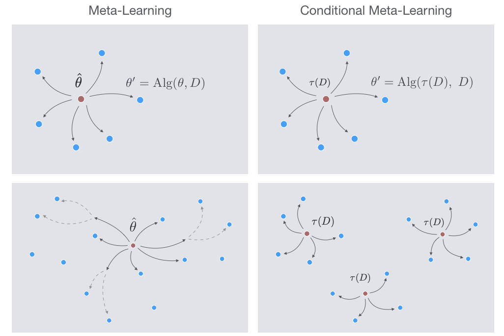@article{wang2020structured, title={Structured Prediction for Conditional Meta-learning}, author={Wang, Ruohan and Demiris, Yiannis and Ciliberto, Carlo}, journal={Neural Information Processing Systems (NeurIPS) 2020}, year={2020} } -
The Advantage of Conditional Meta-Learning for Biased Regularization and Fine-Tuning
NeurIPS 2020Biased regularization and fine-tuning are two recent meta-learning approaches. They have been shown to be effective to tackle distributions of tasks, in which the tasks’ target vectors are all close to a common meta-parameter vector. However, these methods may perform poorly on heterogeneous environments of tasks, where the complexity of the tasks’ distribution cannot be captured by a single meta-parameter vector. We address this limitation by conditional meta-learning, inferring a conditioning function mapping task’s side information into a meta-parameter vector that is appropriate for that task at hand. We characterize properties of the environment under which the conditional approach brings a substantial advantage over standard meta-learning and we highlight examples of environments, such as those with multiple clusters, satisfying these properties. We then propose a convex meta-algorithm providing a comparable advantage also in practice. Numerical experiments confirm our theoretical findings.
pdf code slides video@article{denevi2020advantage, title={The Advantage of Conditional Meta-Learning for Biased Regularization and Fine-Tuning}, author={Denevi, Giulia and Pontil, Massimiliano and Ciliberto, Carlo}, journal={Neural Information Processing Systems (NeurIPS) 2020}, year={2020} } -
Hyperbolic Manifold Regression
AISTATS 2020Geometric representation learning has recently shown great promise in several machine learning settings, ranging from relational learning to language processing and generative models. In this work, we consider the problem of performing manifold-valued regression onto an hyperbolic space as an intermediate component for a number of relevant machine learning applications. In particular, by formulating the problem of predicting nodes of a tree as a manifold regression task in the hyperbolic space, we propose a novel perspective on two challenging tasks: 1) hierarchical classification via label embeddings and 2) taxonomy extension of hyperbolic representations. To address the regression problem we consider previous methods as well as proposing two novel approaches that are computationally more advantageous: a parametric deep learning model that is informed by the geodesics of the target space and a non-parametric kernel-method for which we also prove excess risk bounds. Our experiments show that the strategy of leveraging the hyperbolic geometry is promising. In particular, in the taxonomy expansion setting, we find that the hyperbolic-based estimators significantly outperform methods performing regression in the ambient Euclidean space.
pdf code slides video 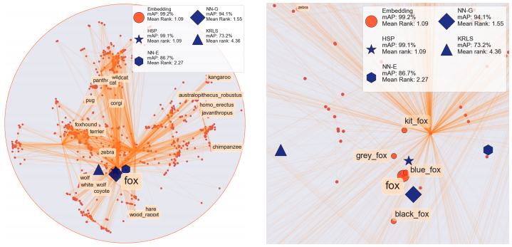@article{marconi2020hyperbolic, title={Hyperbolic Manifold Regression}, author={Marconi, Gian Maria and Rosasco, Lorenzo and Ciliberto, Carlo}, journal={Artificial Intelligence and Statistics (AISTATS) 2020}, year={2020} } -
A General Framework for Consistent Structured Prediction with Implicit Loss Embeddings
JMLR 2020We propose and analyze a novel theoretical and algorithmic framework for structured prediction. While so far the term has referred to discrete output spaces, here we consider more general settings, such as manifolds or spaces of probability measures. We define structured prediction as a problem where the output space lacks a vectorial structure. We identify and study a large class of loss functions that implicitly defines a suitable geometry on the problem. The latter is the key to develop an algorithmic framework amenable to a sharp statistical analysis and yielding efficient computations. When dealing with output spaces with infinite cardinality, a suitable implicit formulation of the estimator is shown to be crucial.
pdf code slides video@article{ciliberto2020general, title={A General Framework for Consistent Structured Prediction with Implicit Loss Embeddings}, author={Ciliberto, Carlo and Rosasco, Lorenzo and Rudi, Alessandro}, journal={Journal of Machine Learning Research (JMLR)}, year={2020} } -
Sinkhorn Barycenters with Free Support via Frank-Wolfe Algorithm
NeurIPS 2019We present a novel algorithm to estimate the barycenter of arbitrary probability distributions with respect to the Sinkhorn divergence. Based on a Frank-Wolfe optimization strategy, our approach proceeds by populating the support of the barycenter incrementally, without requiring any pre-allocation. We consider discrete as well as continuous distributions, proving convergence rates of the proposed algorithm in both settings. Key elements of our analysis are a new result showing that the Sinkhorn divergence on compact domains has Lipschitz continuous gradient with respect to the Total Variation and a characterization of the sample complexity of Sinkhorn potentials. Experiments validate the effectiveness of our method in practice.
pdf code slides video 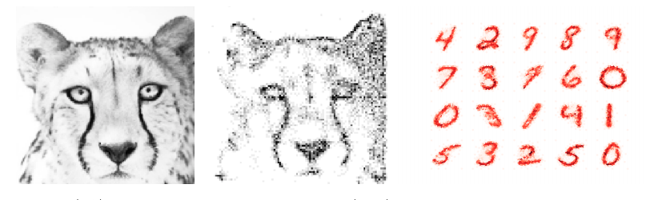@inproceedings{luise2019sinkhorn, title={Sinkhorn Barycenters with Free Support via Frank-Wolfe Algorithm}, author={Luise, Giulia and Salzo, Saverio and Pontil, Massimiliano and Ciliberto, Carlo}, booktitle={Advances in Neural Information Processing Systems}, pages={9318--9329}, year={2019} } -
Localized Structured Prediction
NeurIPS 2019Key to structured prediction is exploiting the problem structure to simplify the learning process. A major challenge arises when data exhibit a local structure (e.g., are made by "parts") that can be leveraged to better approximate the relation between (parts of) the input and (parts of) the output. Recent literature on signal processing, and in particular computer vision, has shown that capturing these aspects is indeed essential to achieve state-of-the-art performance. While such algorithms are typically derived on a case-by-case basis, in this work we propose the first theoretical framework to deal with part-based data from a general perspective. We derive a novel approach to deal with these problems and study its generalization properties within the setting of statistical learning theory. Our analysis is novel in that it explicitly quantifies the benefits of leveraging the part-based structure of the problem with respect to the learning rates of the proposed estimator.
pdf code slides video 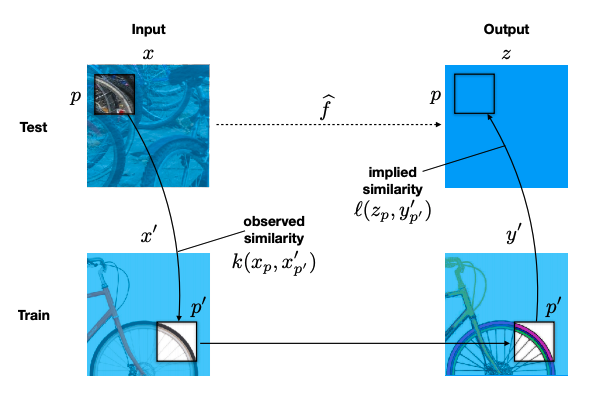@inproceedings{ciliberto2019localized, title={Localized structured prediction}, author={Ciliberto, Carlo and Bach, Francis and Rudi, Alessandro}, booktitle={Advances in Neural Information Processing Systems}, pages={7299--7309}, year={2019} } -
Online-Within-Online Meta-Learning
NeurIPS 2019We study the problem of learning a series of tasks in a fully online Meta-Learning setting. The goal is to exploit similarities among the tasks to incrementally adapt an inner online algorithm in order to incur a low averaged cumulative error over the tasks. We focus on a family of inner algorithms based on a parametrized variant of online Mirror Descent. The inner algorithm is incrementally adapted by an online Mirror Descent meta-algorithm using the corresponding within-task minimum regularized empirical risk as the meta-loss. In order to keep the process fully online, we approximate the meta-subgradients by the online inner algorithm. An upper bound on the approximation error allows us to derive a cumulative error bound for the proposed method. Our analysis can also be converted to the statistical setting by online-to-batch arguments. We instantiate two examples of the framework in which the meta-parameter is either a common bias vector or feature map. Finally, preliminary numerical experiments confirm our theoretical findings.
pdf code slides video@incollection{denevi2019online, title = {Online-Within-Online Meta-Learning}, author = {Denevi, Giulia and Stamos, Dimitris and Ciliberto, Carlo and Pontil, Massimiliano}, booktitle = {Advances in Neural Information Processing Systems 32}, pages = {13110--13120}, year = {2019}, publisher = {Curran Associates, Inc.}, url = {http://papers.nips.cc/paper/9468-online-within-online-meta-learning.pdf} } -
Leveraging Low-Rank Relations Between Surrogate Tasks in Structured Prediction
ICML 2019We study the interplay between surrogate methods for structured prediction and techniques from multitask learning designed to leverage relationships between surrogate outputs. We propose an efficient algorithm based on trace norm regularization which, differently from previous methods, does not require explicit knowledge of the coding/decoding functions of the surrogate framework. As a result, our algorithm can be applied to the broad class of problems in which the surrogate space is large or even infinite dimensional. We study excess risk bounds for trace norm regularized structured prediction, implying the consistency and learning rates for our estimator. We also identify relevant regimes in which our approach can enjoy better generalization performance than previous methods. Numerical experiments on ranking problems indicate that enforcing low-rank relations among surrogate outputs may indeed provide a significant advantage in practice.
pdf code slides video@inproceedings{luise2019leveraging, title={Leveraging low-rank relations between surrogate tasks in structured prediction}, author={Luise, Giulia and Stamos, Dimitris and Pontil, Massimiliano and Ciliberto, Carlo}, booktitle={International Conference on Machine Learning}, year={2019} } -
Learning-to-Learn Stochastic Gradient Descent with Biased Regularization
ICML 2019We study the problem of learning-to-learn: inferring a learning algorithm that works well on tasks sampled from an unknown distribution. As class of algorithms we consider Stochastic Gradient Descent on the true risk regularized by the square euclidean distance to a bias vector. We present an average excess risk bound for such a learning algorithm. This result quantifies the potential benefit of using a bias vector with respect to the unbiased case. We then address the problem of estimating the bias from a sequence of tasks. We propose a meta-algorithm which incrementally updates the bias, as new tasks are observed. The low space and time complexity of this approach makes it appealing in practice. We provide guarantees on the learning ability of the meta-algorithm. A key feature of our results is that, when the number of tasks grows and their variance is relatively small, our learning-to-learn approach has a significant advantage over learning each task in isolation by Stochastic Gradient Descent without a bias term. We report on numerical experiments which demonstrate the effectiveness of our approach.
pdf code slides video@inproceedings{denevi2019learning, title={Learning-to-Learn Stochastic Gradient Descent with Biased Regularization}, author={Denevi, Giulia and Ciliberto, Carlo and Grazzi, Riccardo and Pontil, Massimiliano}, booktitle={International Conference on Machine Learning}, year={2019} } -
Random Expert Distillation: Imitation Learning via Expert Policy Support Estimation
ICML 2019We consider the problem of imitation learning from a finite set of expert trajectories, without access to reinforcement signals. The classical approach of extracting the expert's reward function via inverse reinforcement learning, followed by reinforcement learning is indirect and may be computationally expensive. Recent generative adversarial methods based on matching the policy distribution between the expert and the agent could be unstable during training. We propose a new framework for imitation learning by estimating the support of the expert policy to compute a fixed reward function, which allows us to re-frame imitation learning within the standard reinforcement learning setting. We demonstrate the efficacy of our reward function on both discrete and continuous domains, achieving comparable or better performance than the state of the art under different reinforcement learning algorithms.
pdf code slides video@inproceedings{wang2019random, title={Random Expert Distillation: Imitation Learning via Expert Policy Support Estimation}, author={Wang, Ruohan and Ciliberto, Carlo and Amadori, Pierluigi and Demiris, Yiannis}, booktitle={International Conference on Machine Learning}, year={2019} } -
Differential Properties of Sinkhorn Approximation for Learning with Wasserstein Distance
NIPS 2018Applications of optimal transport have recently gained remarkable attention thanks to the computational advantages of entropic regularization. However, in most situations the Sinkhorn approximation of the Wasserstein distance is replaced by a regularized version that is less accurate but easy to differentiate. In this work we characterize the differential properties of the original Sinkhorn distance, proving that it enjoys the same smoothness as its regularized version and we explicitly provide an efficient algorithm to compute its gradient. We show that this result benefits both theory and applications: on one hand, high order smoothness confers statistical guarantees to learning with Wasserstein approximations. On the other hand, the gradient formula allows us to efficiently solve learning and optimization problems in practice. Promising preliminary experiments complement our analysis.
pdf code slides video 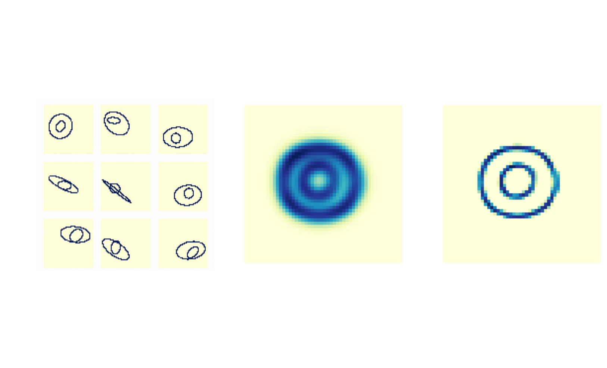@inproceedings{luise2018differential, title={Differential Properties of Sinkhorn Approximation for Learning with Wasserstein Distance}, author={Luise, Giulia and Rudi, Alessandro and Pontil, Massimiliano and Ciliberto, Carlo}, booktitle={Advances in Neural Information Processing Systems}, year={2018} } -
Manifold Structured Prediction
NIPS 2018Structured prediction provides a general framework to deal with supervised problems where the outputs have semantically rich structure. While classical approaches consider finite, albeit potentially huge, output spaces, in this paper we discuss how structured prediction can be extended to a continuous scenario. Specifically, we study a structured prediction approach to manifold valued regression. We characterize a class of problems for which the considered approach is statistically consistent and study how geometric optimization can be used to compute the corresponding estimator. Promising experimental results on both simulated and real data complete our study.
pdf code slides video 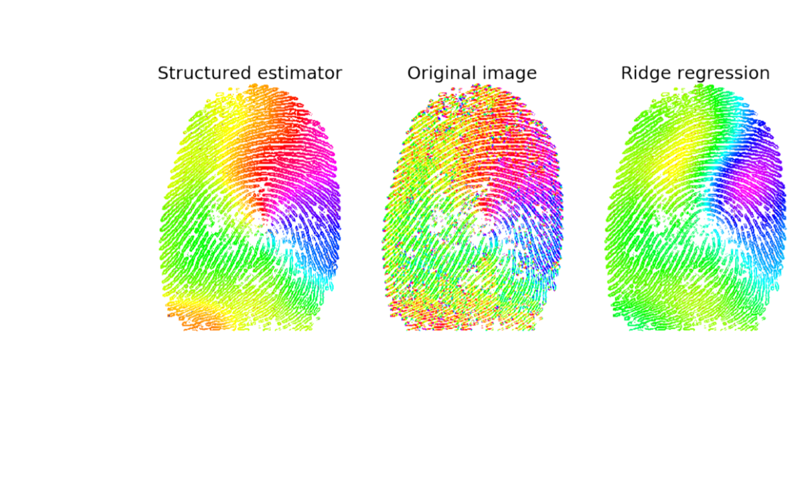@article{ciliberto2018manifold, title={Manifold Structured Prediction}, author={Rudi, Alessandro and Ciliberto, Carlo and Gian Maria Marconi and Rosasco, Lorenzo}, journal={Advances in Neural Information Processing Systems}, year={2018} } -
Incremental Learning-to-Learn with Statistical Guarantees
UAI 2018In learning-to-learn the goal is to infer a learning algorithm that works well on a class of tasks sampled from an unknown meta distribution. In contrast to previous work on batch learning-to-learn, we consider a scenario where tasks are presented sequentially and the algorithm needs to adapt incrementally to improve its performance on future tasks. Key to this setting is for the algorithm to rapidly incorporate new observations into the model as they arrive, without keeping them in memory. We focus on the case where the underlying algorithm is ridge regression parameterized by a positive semidefinite matrix. We propose to learn this matrix by applying a stochastic strategy to minimize the empirical error incurred by ridge regression on future tasks sampled from the meta distribution. We study the statistical properties of the proposed algorithm and prove non-asymptotic bounds on its excess transfer risk, that is, the generalization performance on new tasks from the same meta distribution. We compare our online learning-to-learn approach with a state of the art batch method, both theoretically and empirically.
pdf code slides video
@article{denevi2018incremental, title={Incremental Learning-to-Learn with Statistical Guarantees}, author={Denevi, Giulia and Ciliberto, Carlo and Stamos, Dimitris and Pontil, Massimiliano}, journal={Uncertainty in Artificial Intelligence (UAI)}, year={2018} } -
Quantum machine learning: a classical perspective
Proceeding of the Royal Society A 2018Recently, increased computational power and data availability, as well as algorithmic advances, have led machine learning (ML) techniques to impressive results in regression, classification, data generation and reinforcement learning tasks. Despite these successes, the proximity to the physical limits of chip fabrication alongside the increasing size of datasets is motivating a growing number of researchers to explore the possibility of harnessing the power of quantum computation to speed up classical ML algorithms. Here we review the literature in quantum ML and discuss perspectives for a mixed readership of classical ML and quantum computation experts. Particular emphasis will be placed on clarifying the limitations of quantum algorithms, how they compare with their best classical counterparts and why quantum resources are expected to provide advantages for learning problems. Learning in the presence of noise and certain computationally hard problems in ML are identified as promising directions for the field. Practical questions, such as how to upload classical data into quantum form, will also be addressed.
pdf code slides video@article {ciliberto2018quantum, author = {Ciliberto, Carlo and Herbster, Mark and Ialongo, Alessandro Davide and Pontil, Massimiliano and Rocchetto, Andrea and Severini, Simone and Wossnig, Leonard}, title = {Quantum machine learning: a classical perspective}, volume = {474}, number = {2209}, year = {2018}, doi = {10.1098/rspa.2017.0551}, publisher = {The Royal Society}, issn = {1364-5021}, URL = {http://rspa.royalsocietypublishing.org/content/474/2209/20170551}, eprint = {http://rspa.royalsocietypublishing.org/content/474/2209/20170551.full.pdf}, journal = {Proceedings of the Royal Society of London A: Mathematical, Physical and Engineering Sciences} } -
Consistent Multitask Learning with Nonlinear Output Relations
NIPS 2017Key to multitask learning is exploiting relationships between different tasks to improve prediction performance. If the relations are linear, regularization approaches can be used successfully. However, in practice assuming the tasks to be linearly related might be restrictive, and allowing for nonlinear structures is a challenge. In this paper, we tackle this issue by casting the problem within the framework of structured prediction. Our main contribution is a novel algorithm for learning multiple tasks which are related by a system of nonlinear equations that their joint outputs need to satisfy. We show that the algorithm is consistent and can be efficiently implemented. Experimental results show the potential of the proposed method.
pdf code slides video
@article{ciliberto2017consistent, title={Consistent Multitask Learning with Nonlinear Output Relations}, author={Ciliberto, Carlo and Rudi, Alessandro and Rosasco, Lorenzo and Pontil, Massimiliano}, journal={Advances in Neural Information Processing Systems}, year={2017} } -
Visual recognition for humanoid robots
Robotics and Autonomous Systems 2017Visual perception is a fundamental component for most robotics systems operating in human environments. Specifically, visual recognition is a prerequisite to a large variety of tasks such as tracking, manipulation, human–robot interaction. As a consequence, the lack of successful recognition often becomes a bottleneck for the application of robotics system to real-world situations. In this paper we aim at improving the robot visual perception capabilities in a natural, human-like fashion, with a very limited amount of constraints to the acquisition scenario. In particular our goal is to build and analyze a learning system that can rapidly be re-trained in order to incorporate new evidence if available. To this purpose, we review the state-of-the-art coding–pooling pipelines for visual recognition and propose two modifications which allow us to improve the quality of the representation, while maintaining real-time performances: a coding scheme, Best Code Entries (BCE), and a new pooling operator, Mid-Level Classification Weights (MLCW). The former focuses entirely on sparsity and improves the stability and computational efficiency of the coding phase, the latter increases the discriminability of the visual representation, and therefore the overall recognition accuracy of the system, by exploiting data supervision. The proposed pipeline is assessed from a qualitative perspective on a Human–Robot Interaction (HRI) application on the iCub platform. Quantitative evaluation of the proposed system is performed both on in-house robotics data-sets (iCubWorld) and on established computer vision benchmarks (Caltech-256, PASCAL VOC 2007). As a byproduct of this work, we provide for the robotics community an implementation of the proposed visual recognition pipeline which can be used as perceptual layer for more complex robotics applications.
pdf code slides video 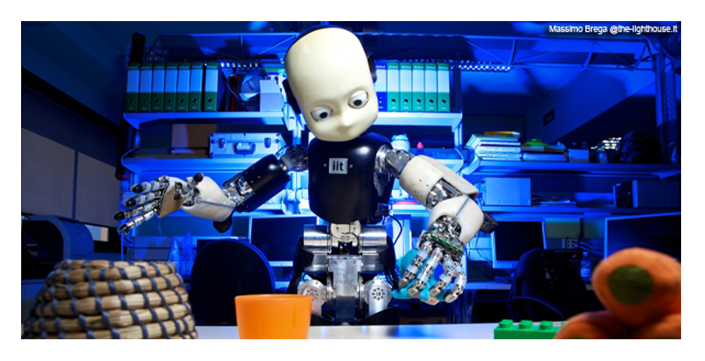@article{fanello2017visual, title={Visual recognition for humanoid robots}, author={Fanello, Sean Ryan and Ciliberto, Carlo and Noceti, Nicoletta and Metta, Giorgio and Odone, Francesca}, journal={Robotics and Autonomous Systems}, volume={91}, pages={151--168}, year={2017}, publisher={Elsevier} } -
Low Compute and Fully Parallel Computer Vision with HashMatch
ICCV 2017Numerous computer vision problems such as stereo depth estimation, object-class segmentation and foreground/ background segmentation can be formulated as per pixel image labeling tasks. Given one or many images as input, the desired output of these methods is usually a spatially smooth assignment of labels. The large amount of such computer vision problems has lead to significant research efforts, with the state of art moving from CRF-based approaches to deep CNNs and more recently, hybrids of the two. Although these approaches have significantly advanced the state of the art, the vast majority has solely focused on improving quantitative results and are not designed for low-compute scenarios. In this paper, we present a new general framework for a variety of computer vision labeling tasks, called HashMatch. Our approach is designed to be both fully parallel, i.e. each pixel is independently processed, and low-compute, with a model complexity an order of magnitude less than existing CNN and CRFbased approaches. We evaluate HashMatch extensively on several problems such as disparity estimation, image retrieval, feature approximation and background subtraction, for which HashMatch achieves high computational efficiency while producing high quality results.
pdf code slides video 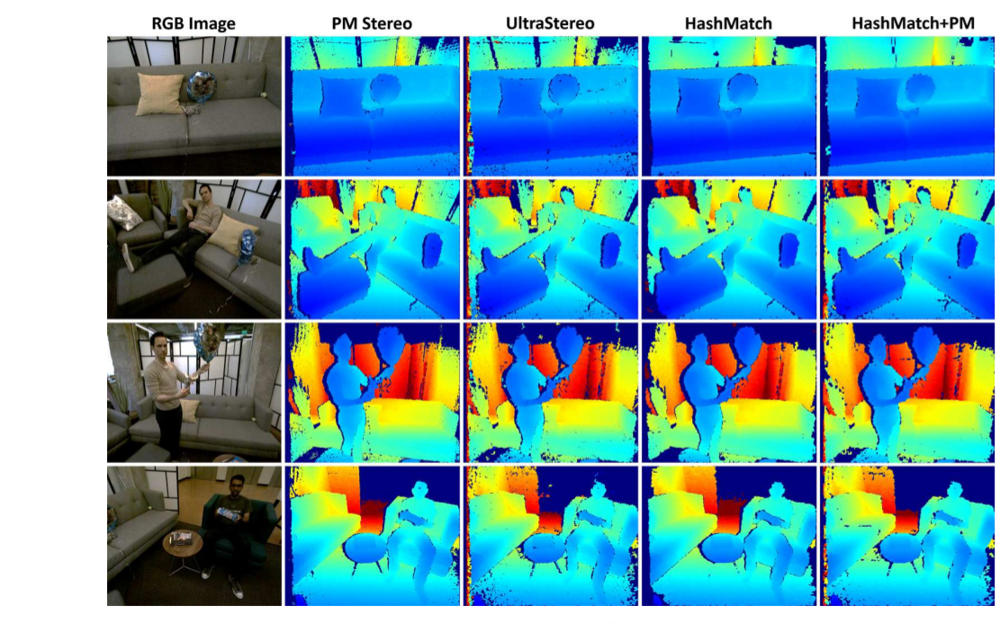@inproceedings{fanello2017low, title={Low Compute and Fully Parallel Computer Vision with HashMatch}, author={Fanello, Sean Ryan and Valentin, Julien and Kowdle, Adarsh and Rhemann, Christoph and Tankovich, Vladimir and Ciliberto, Carlo and Davidson, Philip and Izadi, Shahram}, booktitle={2017 IEEE International Conference on Computer Vision (ICCV)}, pages={3894--3903}, year={2017}, organization={IEEE} } -
Incremental Robot Learning of New Objects with Fixed Update Time
ICRA 2017We consider object recognition in the context of lifelong learning, where a robotic agent learns to discriminate between a growing number of object classes as it accumulates experience about the environment. We propose an incremental variant of the Regularized Least Squares for Classification (RLSC) algorithm, and exploit its structure to seamlessly add new classes to the learned model. The presented algorithm addresses the problem of having an unbalanced proportion of training examples per class, which occurs when new objects are presented to the system for the first time. We evaluate our algorithm on both a machine learning benchmark dataset and two challenging object recognition tasks in a robotic setting. Empirical evidence shows that our approach achieves comparable or higher classification performance than its batch counterpart when classes are unbalanced, while being significantly faster.
pdf code slides video 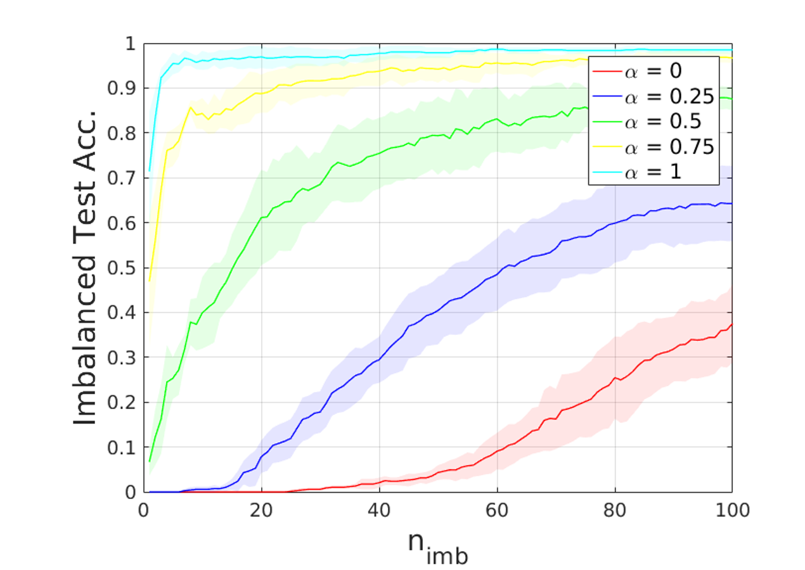@inproceedings{camoriano2017incremental, title={Incremental robot learning of new objects with fixed update time}, author={Camoriano, Raffaello and Pasquale, Giulia and Ciliberto, Carlo and Natale, Lorenzo and Rosasco, Lorenzo and Metta, Giorgio}, booktitle={Robotics and Automation (ICRA), 2017 IEEE International Conference on}, pages={3207--3214}, year={2017}, organization={IEEE} } -
Connecting YARP to the Web with yarp.js
Frontiers in Robotics and AI 2017We present yarp.js, a JavaScript framework enabling robotics networks to interface and interact with external devices by exploiting modern Web communication protocols. By connecting a YARP server module with a browser client on any external device, yarp.js allows to access on board sensors using standard Web APIs and stream the acquired data through the yarp.js network without the need for any installation. Communication between YARP modules and yarp.js clients is bi-directional, opening also the possibility for robotics applications to exploit the capabilities of modern browsers to process external data, such as speech synthesis, 3D data visualization, or video streaming to name a few. Yarp.js requires only a browser installed on the client device, allowing for fast and easy deployment of novel applications. The code and sample applications to get started with the proposed framework are available for the community at the yarp.js GitHub repository.
pdf code slides video 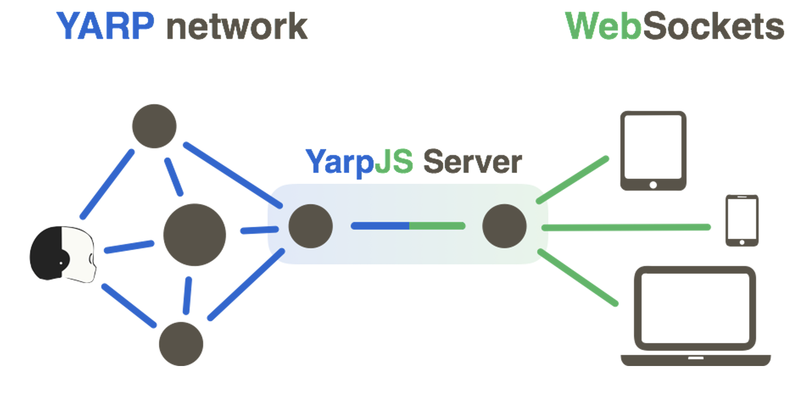@article{10.3389/frobt.2017.00067, author={Ciliberto, Carlo}, title={Connecting YARP to the Web with Yarp.js}, journal={Frontiers in Robotics and AI}, volume={4}, pages={67}, year={2017}, URL={https://www.frontiersin.org/article/10.3389/frobt.2017.00067}, DOI={10.3389/frobt.2017.00067}, ISSN={2296-9144}, } -
A Consistent Regularization Approach for Structured Prediction
NIPS 2016We propose and analyze a regularization approach for structured prediction problems. We characterize a large class of loss functions that allows to naturally embed structured outputs in a linear space. We exploit this fact to design learning algorithms using a surrogate loss approach and regularization techniques. We prove universal consistency and finite sample bounds characterizing the generalization properties of the proposed method. Experimental results are provided to demonstrate the practical usefulness of the proposed approach.
pdf code slides video 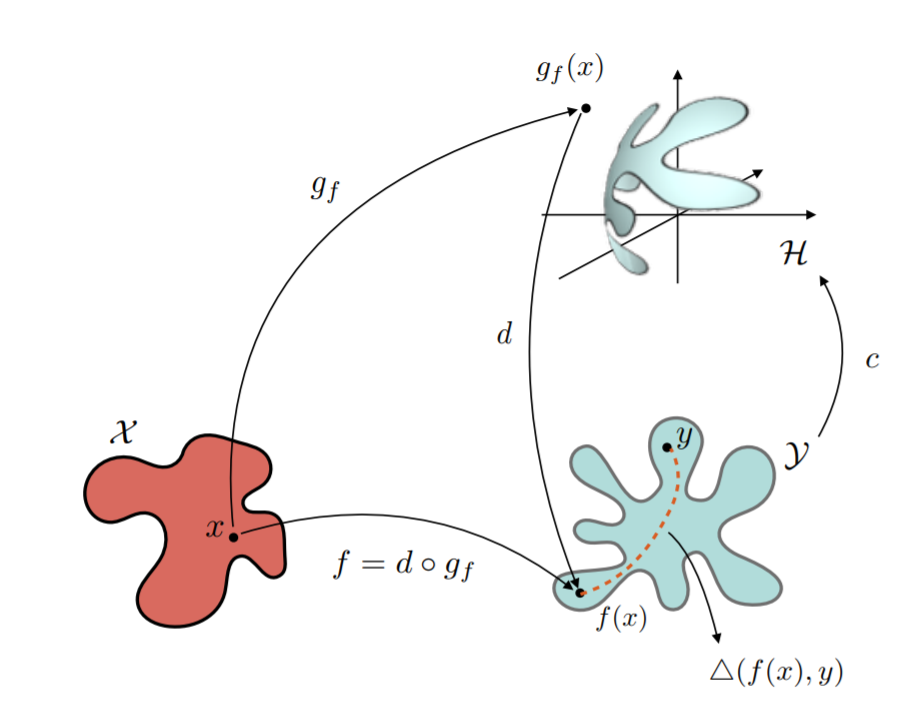@inproceedings{ciliberto2016consistent, title={A Consistent Regularization Approach for Structured Prediction}, author={Ciliberto, Carlo and Rosasco, Lorenzo and Rudi, Alessandro}, booktitle={Advances in Neural Information Processing Systems}, pages={4412--4420}, year={2016} } -
Combining sensory modalities and exploratory procedures to improve haptic object recognition in robotics
Humanoids 2016In this paper we tackle the problem of object recognition using haptic feedback from a robot holding and manipulating different objects. One of the main challenges in this setting is to understand the role of different sensory modalities (namely proprioception, object weight from F/T sensors and touch) and how to combine them to correctly discriminate different objects. We investigated these aspects by considering multiple sensory channels and different exploratory strategies to gather meaningful information regarding the object’s physical properties. We propose a novel strategy to train a learning machine able to efficiently combine sensory modalities by first learning individual object features and then combine them in a single classifier. To evaluate our approach and compare it with previous methods we collected a dataset for haptic object recognition, comprising 11 objects that were held in the hands of the iCub robot while performing different exploration strategies. Results show that our strategy consistently outperforms previous approaches.
pdf code slides video
@inproceedings{higy2016combining, title={Combining sensory modalities and exploratory procedures to improve haptic object recognition in robotics}, author={Higy, Bertrand and Ciliberto, Carlo and Rosasco, Lorenzo and Natale, Lorenzo}, booktitle={Humanoid Robots (Humanoids), 2016 IEEE-RAS 16th International Conference on}, pages={117--124}, year={2016}, organization={IEEE} } -
Active perception: Building objects' models using tactile exploration
Humanoids 2016In this paper we present an efficient active learning strategy applied to the problem of tactile exploration of an object's surface. The method uses Gaussian process (GPs) classification to efficiently sample the surface of the object in order to reconstruct its shape. The proposed method iteratively samples the surface of the object, while, simultaneously constructing a probabilistic model of the object's surface. The probabilities in the model are used to guide the exploration. At each iteration, the estimate of the object's shape is used to slice the object in equally spaced intervals along the height of the object. The sampled locations are then labelled according to the interval in which their height falls. In its simple form, the data are labelled as belonging to the object and not belonging to the object: object and no-object, respectively. A GP classifier is trained to learn the object/no-object decision boundary. The next location to be sampled is selected at the classification boundary, in this way, the exploration is biased towards more informative areas. Complex features of the object's surface is captured by increasing the number of intervals as the number of sampled locations is increased. We validated our approach on six objects of different shapes using the iCub humanoid robot. Our experiments show that the method outperforms random selection and previous work based on GP regression by sampling more points on and near-the-boundary of the object.
pdf code slides video
@inproceedings{jamali2016active, title={Active perception: Building objects' models using tactile exploration}, author={Jamali, Nawid and Ciliberto, Carlo and Rosasco, Lorenzo and Natale, Lorenzo}, booktitle={Humanoid Robots (Humanoids), 2016 IEEE-RAS 16th International Conference on}, pages={179--185}, year={2016}, organization={IEEE} } -
Object identification from few examples by improving the invariance of a deep convolutional neural network
IROS 2016The development of reliable and robust visual recognition systems is a main challenge towards the deployment of autonomous robotic agents in unconstrained environments. Learning to recognize objects requires image representations that are discriminative to relevant information while being invariant to nuisances, such as scaling, rotations, light and background changes, and so forth. Deep Convolutional Neural Networks can learn such representations from large web-collected image datasets and a natural question is how these systems can be best adapted to the robotics context where little supervision is often available. In this work, we investigate different training strategies for deep architectures on a new dataset collected in a real-world robotic setting. In particular we show how deep networks can be tuned to improve invariance and discriminability properties and perform object identification tasks with minimal supervision.
pdf code slides video
@inproceedings{pasquale2016object, title={Object identification from few examples by improving the invariance of a deep convolutional neural network}, author={Pasquale, Giulia and Ciliberto, Carlo and Rosasco, Lorenzo and Natale, Lorenzo}, booktitle={Intelligent Robots and Systems (IROS), 2016 IEEE/RSJ International Conference on}, pages={4904--4911}, year={2016}, organization={IEEE} } -
Enabling Depth-driven Visual Attention on the iCub Humanoid Robot: Instructions for Use and New Perspectives
Frontiers in Robotics and AI 2016Reliable depth perception eases and enables a large variety of attentional and interactive behaviors on humanoid robots. However, the use of depth in real-world scenarios is hindered by the difficulty of computing real-time and robust binocular disparity maps from moving stereo cameras. On the iCub humanoid robot, we recently adopted the Efficient Large-scale Stereo (ELAS) Matching algorithm (Geiger et al., 2010) for computation of the disparity map. In this technical report, we show that this algorithm allows reliable depth perception and experimental evidence that demonstrates that it can be used to solve challenging visual tasks in real-world indoor settings. As a case study, we consider the common situation where the robot is asked to focus the attention on one object close in the scene, showing how a simple but effective disparity-based segmentation solves the problem in this case. This example paves the way to a variety of other similar applications.
pdf code slides video
@article{10.3389/frobt.2016.00035, author={Pasquale, Giulia and Mar, Tanis and Ciliberto, Carlo and Rosasco, Lorenzo and Natale, Lorenzo}, title={Enabling Depth-Driven Visual Attention on the iCub Humanoid Robot: Instructions for Use and New Perspectives}, journal={Frontiers in Robotics and AI}, volume={3}, pages={35}, year={2016}, URL={https://www.frontiersin.org/article/10.3389/frobt.2016.00035}, DOI={10.3389/frobt.2016.00035}, ISSN={2296-9144}, } -
Convex Learning of Multiple Tasks and their Structure
ICML 2015Reducing the amount of human supervision is a key problem in machine learning and a natural approach is that of exploiting the relations (structure) among different tasks. This is the idea at the core of multi-task learning. In this context a fundamental question is how to incorporate the tasks structure in the learning problem.We tackle this question by studying a general computational framework that allows to encode a-priori knowledge of the tasks structure in the form of a convex penalty; in this setting a variety of previously proposed methods can be recovered as special cases, including linear and non-linear approaches. Within this framework, we show that tasks and their structure can be efficiently learned considering a convex optimization problem that can be approached by means of block coordinate methods such as alternating minimization and for which we prove convergence to the global minimum.
pdf code slides video 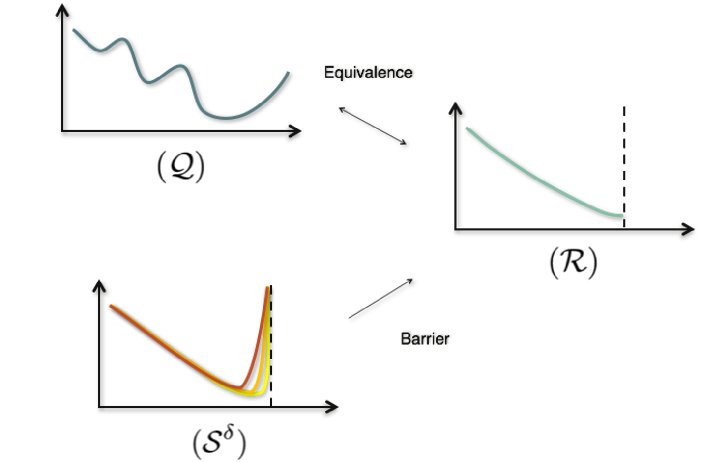@inproceedings{ciliberto2015convex, title={Convex learning of multiple tasks and their structure}, author={Ciliberto, Carlo and Mroueh, Youssef and Poggio, Tomaso and Rosasco, Lorenzo}, booktitle={International Conference on Machine Learning}, pages={1548--1557}, year={2015} } -
Learning Multiple Visual Tasks while Discovering their Structure
CVPR 2015Multi-task learning is a natural approach for computer vision applications that require the simultaneous solution of several distinct but related problems, e.g. object detection, classification, tracking of multiple agents, or denoising, to name a few. The key idea is that exploring task relatedness (structure) can lead to improved performances. In this paper, we propose and study a novel sparse, non-parametric approach exploiting the theory of Reproducing Kernel Hilbert Spaces for vector-valued functions. We develop a suitable regularization framework which can be formulated as a convex optimization problem, and is provably solvable using an alternating minimization approach. Empirical tests show that the proposed method compares favorably to state of the art techniques and further allows to recover interpretable structures, a problem of interest in its own right.
pdf code slides video 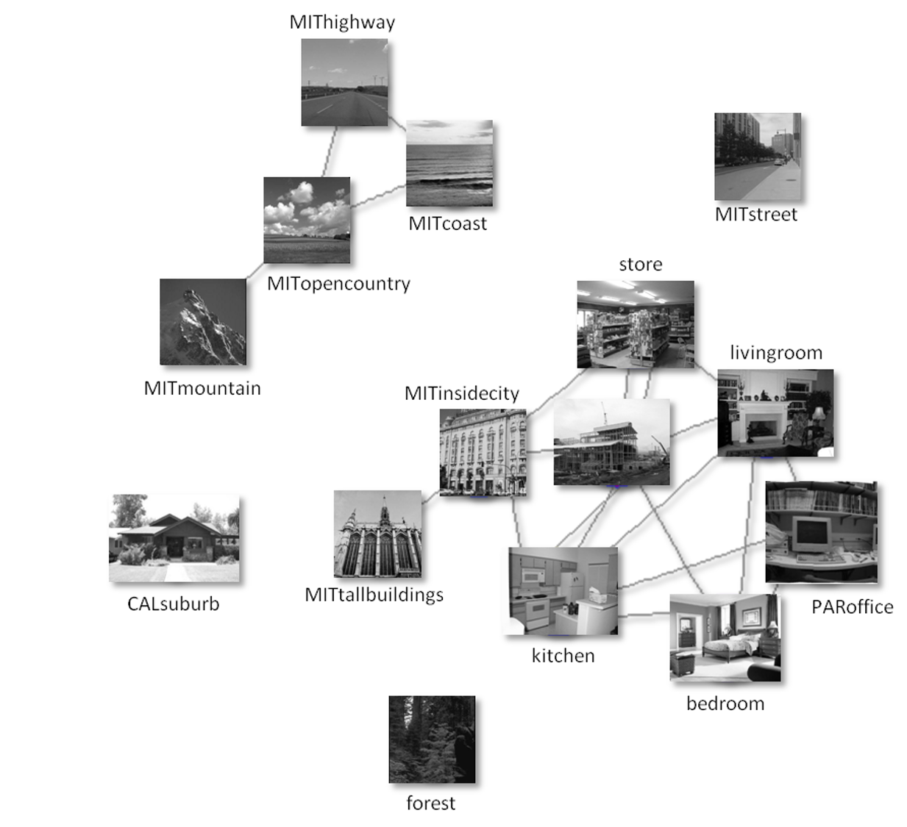@inproceedings{ciliberto2015learning, title={Learning multiple visual tasks while discovering their structure}, author={Ciliberto, Carlo and Rosasco, Lorenzo and Villa, Silvia}, booktitle={Proceedings of the IEEE Conference on Computer Vision and Pattern Recognition}, pages={131--139}, year={2015} } -
Characterizing the input-output function of the olfactory-limbic pathway in the guinea pig
Computational intelligence and neuroscience 2015Nowadays the neuroscientific community is taking more and more advantage of the continuous interaction between engineers and computational neuroscientists in order to develop neuroprostheses aimed at replacing damaged brain areas with artificial devices. To this end, a technological effort is required to develop neural network models which can be fed with the recorded electrophysiological patterns to yield the correct brain stimulation to recover the desired functions. In this paper we present a machine learning approach to derive the input-output function of the olfactory-limbic pathway in the in vitro whole brain of guinea pig, less complex and more controllable than an in vivo system. We first experimentally characterized the neuronal pathway by delivering different sets of electrical stimuli from the lateral olfactory tract (LOT) and by recording the corresponding responses in the lateral entorhinal cortex (l-ERC). As a second step, we used information theory to evaluate how much information output features carry about the input. Finally we used the acquired data to learn the LOT-l-ERC "I/O function," by means of the kernel regularized least squares method, able to predict l-ERC responses on the basis of LOT stimulation features. Our modeling approach can be further exploited for brain prostheses applications.
pdf code slides video
@article{breschi2015characterizing, title={Characterizing the input-output function of the olfactory-limbic pathway in the guinea pig}, author={Breschi, Gian Luca and Ciliberto, Carlo and Nieus, Thierry and Rosasco, Lorenzo and Taverna, Stefano and Chiappalone, Michela and Pasquale, Valentina}, journal={Computational intelligence and neuroscience}, volume={2015}, pages={60}, year={2015}, publisher={Hindawi Publishing Corp.} } -
Exploiting global force torque measurements for local compliance estimation in tactile arrays
IROS 2014In this paper we tackle the problem of estimating the local compliance of tactile arrays exploiting global measurements from a single force and torque sensor. The proposed procedure exploits a transformation matrix (describing the relative position between the local tactile elements and the global force/torque measurements) to define a linear regression problem on the unknown local stiffness. Experiments have been conducted on the foot of the iCub robot, sensorized with a single force/torque sensor and a tactile array of 250 tactile elements (taxels) on the foot sole. Results show that a simple calibration procedure can be employed to estimate the stiffness parameters of virtual springs over a tactile array and to use these model to predict normal forces exerted on the array based only on the tactile feedback. Leveraging on previous works [1] the proposed procedure does not necessarily need a-priori information on the transformation matrix of the taxels which can be directly estimated from available measurements.
pdf code slides video 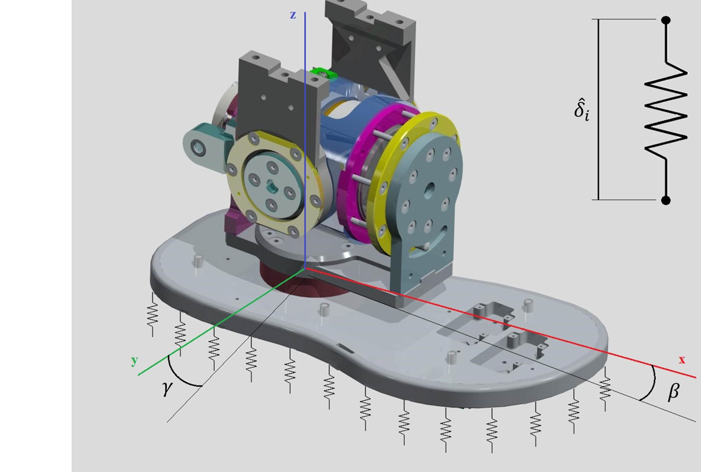@inproceedings{ciliberto2014exploiting, title={Exploiting global force torque measurements for local compliance estimation in tactile arrays}, author={Ciliberto, Carlo and Fiorio, Luca and Maggiali, Marco and Natale, Lorenzo and Rosasco, Lorenzo and Metta, Giorgio and Sandini, Giulio and Nori, Francesco}, booktitle={Intelligent Robots and Systems (IROS 2014), 2014 IEEE/RSJ International Conference on}, pages={3994--3999}, year={2014}, organization={IEEE} } -
Ask the image: supervised pooling to preserve feature locality
CVPR 2014In this paper we propose a weighted supervised pooling method for visual recognition systems. We combine a standard Spatial Pyramid Representation which is commonly adopted to encode spatial information, with an appropriate Feature Space Representation favoring semantic information in an appropriate feature space. For the latter, we propose a weighted pooling strategy exploiting data supervision to weigh each local descriptor coherently with its likelihood to belong to a given object class. The two representations are then combined adaptively with Multiple Kernel Learning. Experiments on common benchmarks (Caltech256 and PASCAL VOC-2007) show that our image representation improves the current visual recognition pipeline and it is competitive with similar state-of-art pooling methods. We also evaluate our method on a real Human-Robot Interaction setting, where the pure Spatial Pyramid Representation does not provide sufficient discriminative power, obtaining a remarkable improvement.
pdf code slides video
@inproceedings{fanello2014, title={Ask the image: supervised pooling to preserve feature locality}, author={Fanello, Sean Ryan and Noceti, Nicoletta and Ciliberto, Carlo and Metta, Giorgio and Odone, Francesca}, booktitle={Computer Vision and Pattern Recognition (CVPR), 2014 IEEE Conference on}, year={2014}, organization={IEEE} } -
On the impact of learning hierarchical representations for visual recognition in robotics
IROS 2013Recent developments in learning sophisticated, hierarchical image representations have led to remarkable progress in the context of visual recognition. While these methods are becoming standard in modern computer vision systems, they are rarely adopted in robotics. The question arises of whether solutions, which have been primarily developed for image retrieval, can perform well in more dynamic and unstructured scenarios. In this paper we tackle this question performing an extensive evaluation of state of the art methods for visual recognition on a iCub robot. We consider the problem of classifying 15 different objects shown by a human demonstrator in a challenging Human-Robot Interaction scenario. The classification performance of hierarchical learning approaches are shown to outperform benchmark solutions based on local descriptors and template matching. Our results show that hierarchical learning systems are computationally efficient and can be used for real-time training and recognition of objects.
pdf code slides video
@inproceedings{ciliberto2013impact, title={On the impact of learning hierarchical representations for visual recognition in robotics}, author={Ciliberto, Carlo and Fanello, Sean Ryan and Santoro, Matteo and Natale, Lorenzo and Metta, Giorgio and Rosasco, Lorenzo}, booktitle={Intelligent Robots and Systems (IROS), 2013 IEEE/RSJ International Conference on}, pages={3759--3764}, year={2013}, organization={IEEE} } -
Weakly supervised strategies for natural object recognition in robotics
ICRA 2013The paper aims at building a computer vision system for automatic image labeling in robotics scenarios. We show that the weak supervision provided by a human demonstrator, through the exploitation of the independent motion, enables a realistic Human-Robot Interaction (HRI) and achieves an automatic image labeling. We start by reviewing the underlying principles of our previous method for egomotion compensation [1], then we extend our approach removing the dependency on a known kinematics in order to provide a general method for a wide range of devices. From sparse salient features we predict the egomotion of the camera through a heteroscedastic learning method. Subsequently we use an object recognition framework for testing the automatic image labeling process: we rely on the State of the Art method from Yang et al. [2], employing local features augmented through a sparse coding stage and classified with linear SVMs. The application has been implemented and validated on the iCub humanoid robot and experiments are presented to show the effectiveness of the proposed approach. The contribution of the paper is twofold: first we overcome the dependency on the kinematics in the independent motion detection method, secondly we present a practical application for automatic image labeling through a natural HRI.
pdf code slides video
@inproceedings{fanello2013weakly, title={Weakly supervised strategies for natural object recognition in robotics}, author={Fanello, Sean Ryan and Ciliberto, Carlo and Natale, Lorenzo and Metta, Giorgio}, booktitle={Robotics and Automation (ICRA), 2013 IEEE International Conference on}, pages={4223--4229}, year={2013}, organization={IEEE} } -
A Heteroscedastic Approach to Independent Motion Detection for Actuated Visual Sensors
IROS 2012We present an original method for independent motion detection in dynamic scenes. The algorithm is designed for robotics real-time applications and it overcomes the shortcomings of current approaches for the egomotion estimation in presence of many outliers, occlusions and cluttered background. The method relies on a stereo system which performs the reprojection of a sparse set of features following the camera displacement. We assume that noisy prior knowledge of the motion is available (i.e. a robot’s kinematic model). Since this estimation leads to a heteroscedastic regression problem due to input-dependent noise, we employ a simple, but computationally efficient approach in order to accurately determine the latent egomotion subspace spanned by the Degrees of Freedom (DOFs) of the robot. The algorithm has been implemented and validated on the iCub humanoid robot. Qualitative and quantitative experiments are presented to show the effectiveness of the proposed approach. The contribution of the paper is a modular framework for independent motion detection naturally extendable to any architecture featuring a visual sensor that can be directly controllable.
pdf code slides video
@inproceedings{ciliberto2012heteroscedastic, title={A heteroscedastic approach to independent motion detection for actuated visual sensors}, author={Ciliberto, Carlo and Fanello, Sean Ryan and Natale, Lorenzo and Metta, Giorgio}, booktitle={Intelligent Robots and Systems (IROS), 2012 IEEE/RSJ International Conference on}, pages={3907--3913}, year={2012}, organization={IEEE} } -
Online multiple instance learning applied to hand detection in a humanoid robot
IROS 2011Algorithms with limited supervision requirements are particularly useful for intelligent autonomous agents, that must be able to learn with minimal supervision and adapt online to a changing environment. We propose an online Multiple Instance Learning algorithm based on boosting and apply it to the problem of visual detection of the hand of a humanoid robot. Our approach solves the multiple instance problem at the level of the weak learners, allowing the detection of objects represented by more than one positive instance. Feature selection and adaptation are performed online as new data are fed to the algorithm. Experiments in real-world conditions on an iCub humanoid robot confirm that the algorithm can learn the appearance of the hand, reaching an accuracy comparable with off-line algorithms. This remains true when supervision is generated by the robot itself in a completely autonomous fashion. To the best of our knowledge, this is the first implementation of online multiple-instance learning on a robotic platform.
pdf code slides video
@inproceedings{ciliberto2011online, title={Online multiple instance learning applied to hand detection in a humanoid robot}, author={Ciliberto, Carlo and Smeraldi, Fabrizio and Natale, Lorenzo and Metta, Giorgio}, booktitle={Intelligent Robots and Systems (IROS), 2011 IEEE/RSJ International Conference on}, pages={1526--1532}, year={2011}, organization={IEEE} } -
Reexamining lucas-kanade method for real-time independent motion detection: Application to the icub humanoid robot
IROS 2011Visual motion is a simple yet powerful cue widely used by biological systems to improve their perception and adaptation to the environment. Examples of tasks that greatly benefit from the ability to detect movement are object segmentation, 3D scene reconstruction and control of attention. In computer vision several algorithms for computing visual motion and optic flow exists. However their application in robotics is not straightforward as in these platforms visual motion is often dominated by (self) motion produced by the movement of the robot (egomotion) making it difficult to disambiguate between motion induced by the scene dynamics or by the own actions of the robot. Independent motion detection is an active field in computer vision and robotics, however approaches in this area typically require that some models of both the environment and the robot visual system are available and are hardly suitable for real-time control. In this paper we describe the motionCUT, a derivation of the Lucas-Kanade optical flow algorithm that allows detecting moving objects, irrespectively of the egomotion produced by the robot. Our method is purely visual and does not require information other than the images coming from the cameras. As such it can be easily adapted to any robotic platform. The system was tested on a stereo tracking task on the iCub humanoid robot, demonstrating that the algorithm performs well and can easily execute in real-time.
pdf code slides video
@inproceedings{ciliberto2011reexamining, title={Reexamining lucas-kanade method for real-time independent motion detection: Application to the icub humanoid robot}, author={Ciliberto, Carlo and Pattacini, Ugo and Natale, Lorenzo and Nori, Francesco and Metta, Giorgio}, booktitle={Intelligent Robots and Systems (IROS), 2011 IEEE/RSJ International Conference on}, pages={4154--4160}, year={2011}, organization={IEEE} }